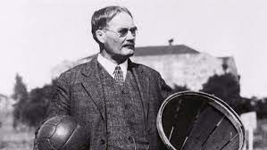
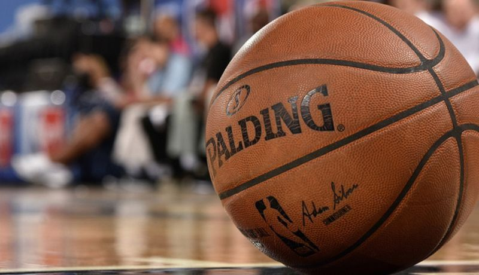
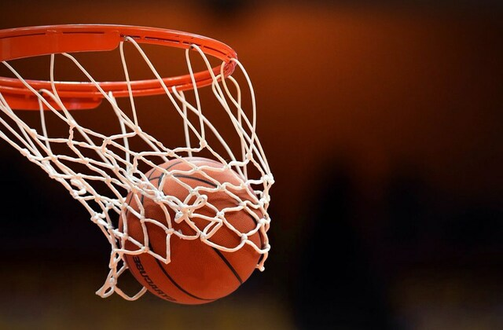

La historia del baloncesto comenzó una fría mañana de diciembre de 1891. Los estudiantes de Springfield se dirigieron al gimnasio, donde les esperaba el Dr. Naismith, profesor de educación física. En aquel momento desconocían que estaban formando parte del origen del deporte de la canasta, y que su querido maestro sería, nada más y nada menos, que su inventor.
Naismith había trabajado muy duro para encontrar una actividad divertida que se pudiera realizar en los duros días de invierno de Massachussets. Había partido de lo que no quería hasta encontrar lo que quería: un juego que se pudiera realizar en el interior, donde la destrucción no fuese lo que predominara en él, que nada golpeara a la pelota y donde la fuerza no fuera necesaria para conseguir la victoria.

Primer partido de baloncesto
El primer partido que se jugó en la historia del baloncesto fue unos días antes de las Navidades de 1891. Ese partido lo disputaron nueve escolares contra otros nueve. Durante el transcurso del mismo se modificaron y fijaron algunas reglas del basket, como por ejemplo el salto inicial, algo que Naismith no había desarrollado desde el principio.
En muy poco tiempo, Naismith se vio sobrepasado por los acontecimientos. El baloncesto se hizo tan popular que no pudo controlarlo. El nuevo juego se extendió como la pólvora. La Universidad de Springfield pertenecía a la Asociación de Jóvenes Católicos (YMCA), y esta asociación ayudó mucho a ello.

Nacimiento de la NBA
En 1898 se crea la primera liga profesional. La canasta no quedó como es en la actualidad hasta 1912, aunque la actual también ha cambiado desde entonces, sobre todo el tipo de aro y de tableta, las protecciones y los mecanismos de seguridad.
En 1939 nace el campeonato de la NCAA y en 1946 la NBA donde se crearon grandes profesionales como las estrellas de la NBA que vienen cada año al Campus WOB. Setenta y cuatro años no son tantos para el desarrollo de un deporte, siendo el baloncesto en concreto un deporte con muchísima evolución. Incluso en nuestros días, las reglas se siguen modificando con el claro objetivo de mejorar el espectáculo.